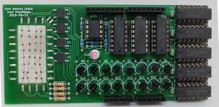

Image © 2020 Jussi Kilpeläinen, used under CC-BY 4.0
Jussi Kilpeläinen's core memory shield
2016-05-02 [updated 2020-11-12]
Jussi Kilpeläinen created a core memory shield, similar in some ways to ours, but using a CPLD instead of discrete logic for the decoding. He also adds one feature which was missing from our design — a blinkenlight. He then needed to design a revised version in 2019, as the CPLD was being discontinued.
He's made the design available in kit form on Tindie and posted a write-up on his blog with full documentation.
We have received a couple of enquiries about a kit, but we didn't have the time to put one together, so it's great that this is now available.
(Just to be clear, we have no commercial links to this product.)